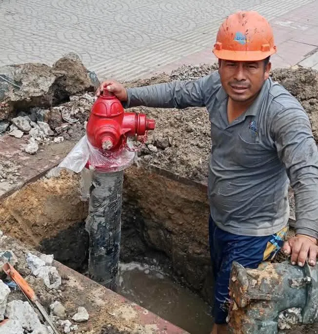

Atención y reclamos
Encuentra la oficina más cerca de tu casa, llama si hay una fuga y haz tu reclamo sin vueltas.

EPSEL no cobra a domicilio. Paga solo en las oficinas de EPSEL o en los bancos y agentes autorizados. Si alguien llega a tu casa a cobrar, no pagues y avísanos.
¿Fuga, tubería rota o desagüe atorado?
Llama a la central de emergencias de EPSEL.
Oficina de emergencias: Dall’Orso cuadra 1, esquina con Grau, Chiclayo.
Oficinas y teléfonos
Escribe por ejemplo Motupe, Reque o Picsi. La lista se acorta mientras escribes.
Chiclayo
- Local comercial (atención al cliente)Av. Grau 451, Chiclayo(074) 273609
- Planta de tratamiento (local administrativo)Av. Nicolás de Piérola 541, Chiclayo942 604 553
- PampagrandeAv. Túpac Amaru s/n942 479 163
- PimentelAv. Leoncio Prado 135942 491 269
Atención al público en general en el local Grau y la planta: martes de 2:00 a 4:00 p.m. y jueves de 8:00 a.m. a 12:00 m.
Zonal Lambayeque
- Oficina zonal LambayequeAv. Huamachuco cuadra 1942 462 845
- San JoséCalle Jorge Chávez 235942 497 906
- MochumíCalle Federico Villarreal 206942 464 737
- TúcumeCalle Victoria 365942 498 208
- ÍllimoCalle Independencia 405Teléfono por confirmar
- PacoraCalle San Pablo cuadra 8942 460 469
- JayancaCalle Miguel Grau 388942 461 857
- SalasCalle El Niño C-3942 498 039
- MotupeCalle Emiliano Niño 408942 471 796
- OlmosCalle Santo Domingo 247942 460 459
Zonal Sur
- Oficina zonal SurCalle Manuel María Izaga 642942 970 751
- Ciudad Eten942 460 861
- Mocupe942 467 641
- Nueva Arica942 473 969
- Oyotún942 471 809
- Puerto Eten942 496 515
- Reque942 497 870
- Santa Rosa942 498 036
- Zaña942 498 444
Zonal Ferreñafe
- Oficina zonal FerreñafeCalle Nicanor Carmona 818942 605 230
- PicsiCalle Congreso 120942 482 598
- Posope AltoCalle Domingo Atoche s/n942 492 297
- BatangrandeCalle Calpón 18942 460 367
No encontramos esa localidad. Llama al local comercial de Chiclayo, (074) 273609, o escríbenos por WhatsApp.
Cómo hacer un reclamo
Ten a la mano tu DNI y una copia
Si reclamas por un recibo, lleva también ese recibo.
Mira si puedes reclamar tú
Puede reclamar el dueño de la casa, el titular del servicio, quien vive ahí y usa el agua (con su recibo, contrato o constancia de posesión) o alguien con carta poder del titular.
Preséntalo en línea o en la oficina
Usa la solicitud de reclamo de la oficina virtual o acércate al local comercial de Av. Grau 451.
Guarda tu número de reclamo
Con él sigues tu caso. EPSEL te responde en los plazos que fija SUNASS.
Denuncias y sugerencias
¿Viste un cobro indebido, una conexión clandestina o una cisterna desviada?
Escribe a denuncias@epsel.com.pe con el formato de denuncia (Word).
Si temes represalias, pide protección con el formato de medidas de protección (Word).
También puedes denunciar en la plataforma de denuncias del Estado, sin dar tu nombre.